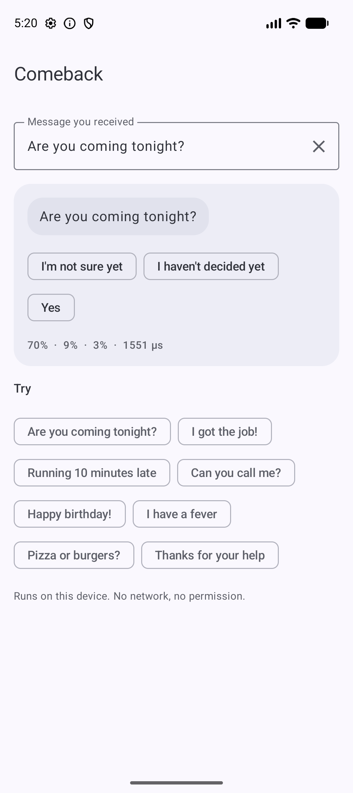
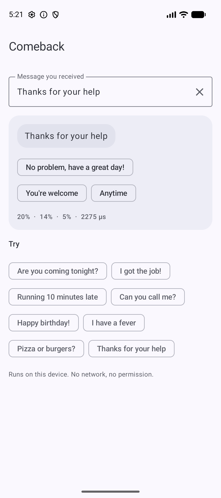
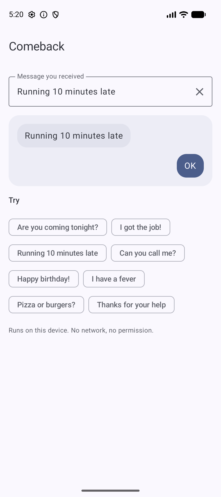

Suggest three short replies to any incoming message in about half a millisecond. Nothing is sent to a server, nothing is generated, and nothing is added to your build except a 5 MB AAR.
Free & open source · Apache-2.0 code · Live on JitPack
No server, no native libraries, no Google Play services. It is a small Kotlin library that you can read, test and ship.
Replies come from a fixed, reviewed list of about 1,300 short replies and are never generated, so it can't say something rude or odd. Unhelpful chips like "What?" or "Huh" are never shown.
At most one reply per intent group, so you won't get "Thanks", "Thank you" and "Thanks!" side by side.
Pure Kotlin inference. There is no ONNX Runtime, TFLite, ML Kit or native code, and it works from minSdk 21 in Kotlin or Java.
The model ships inside the AAR. It makes no network calls, needs no permissions and sends no telemetry, so messages never leave the phone.
Real output from the sample app on an Android emulator. These are not mockups.

"Are you coming tonight?" → I'm not sure yet · I haven't decided yet · Yes

"Thanks for your help" → No problem, have a great day! · You're welcome · Anytime

"Running 10 minutes late" → tapped "OK"
One line in your Gradle file, available now via JitPack. No API key, no account.
// settings.gradle.kts
dependencyResolutionManagement {
repositories {
mavenCentral()
maven { url = uri("https://jitpack.io") }
}
}
// build.gradle.kts
dependencies {
implementation("com.github.rajumark:comeback:v1.0.0")
}Add Comeback from rajumark to this Android project (Kotlin).
What it does: on-device smart replies. Given a received message, it suggests 3 short replies to tap, picked from a fixed reviewed list. English, ~5 MB, no dependencies, no network.
Install (JitPack):
settings.gradle.kts: add maven { url = uri("https://jitpack.io") } to repositories
build.gradle.kts: implementation("com.github.rajumark:comeback:v1.0.0")
Usage:
val comeback = Comeback(context) // off the main thread, keep one instance
val chips = comeback.replies("Are you coming tonight?").map { it.text }
Repo: https://github.com/rajumark/comeback#readme
Add the dependency, then follow the README for the exact API and current version.Load once and reuse the instance. replies() is thread-safe.
val comeback = Comeback(context)
val chips = comeback.replies("Let's meet at 7")
chips.map { it.text } // [OK, OK, see you then, See you there!]
comeback.close()try (Comeback comeback = new Comeback(context)) {
List<SmartReply> r =
comeback.replies("Are you coming tonight?");
}Anywhere a user answers a message and a single tap would do.
Show reply chips above the composer for the last received message.
"I miss you" → I miss you tooOffer reply actions straight from a notification, with no server round trip.
"Can you call me?" → SureTyping on a watch is painful; one tap isn't.
"See you tomorrow" → See youHelp buyers and sellers answer quickly on logistics.
"Let's meet at 7" → OK, see you thenLet people with motor or typing difficulties answer with one tap.
"Good morning!" → Hello!Works in airplane mode, on patchy networks and in regions where cloud AI isn't an option.
"Running 10 minutes late" → OKMeasured on 335 hand-written messages across 16 categories. A reply counts as good when a person would plausibly send it.
| Comeback | Google ML Kit Smart Reply | |
|---|---|---|
| A good reply in the top 3 | 63.6% | 72.8% |
| Top reply is good | 42.1% | 52.8% |
| Answers every message | Yes | 95% |
| Size | 4.6 MB | 6.6 MB + 4.4 MB native libs |
| Latency (Android emulator) | ~0.5 ms | ~16.6 ms |
| Dependencies | None | ML Kit + native code |
ML Kit gives better replies. Comeback is smaller and much faster, needs no native code or Google Play services, and you can read and change its reply list. It is strongest on thanks (100% good in the top 3), yes/no questions (90%), affection and goodbyes. It is weakest on opinions and open questions, where you can hide the chips with minConfidence.
| Member | Description |
|---|---|
Comeback(context) | Loads the bundled model. Implements Closeable. |
replies(message, limit = 3, minConfidence = 0f) | The best replies first, one per intent group. Empty for a blank message, or when the best reply scores below minConfidence. |
SmartReply(text, confidence) | One reply. |
An Android library that reads a message and returns short replies to show as tappable chips, like the smart replies in messaging apps.
No. It scores a fixed list of about 1,300 reviewed replies and returns the best ones, so every possible output is known in advance.
English in v1. To detect the language first and show chips only for English, use Beacon.
Yes. Inference runs entirely on the device in plain Kotlin. It makes no server calls, needs no network permission and sends no telemetry.
Features, the top 5 replies and the 3 shown chips match the Python reference on all 354 test vectors, both on the JVM and on an Android device.
The code is Apache-2.0. The model and reply list were trained on dialogue datasets, and some of those are licensed for non-commercial use only. Read the NOTICE file first.